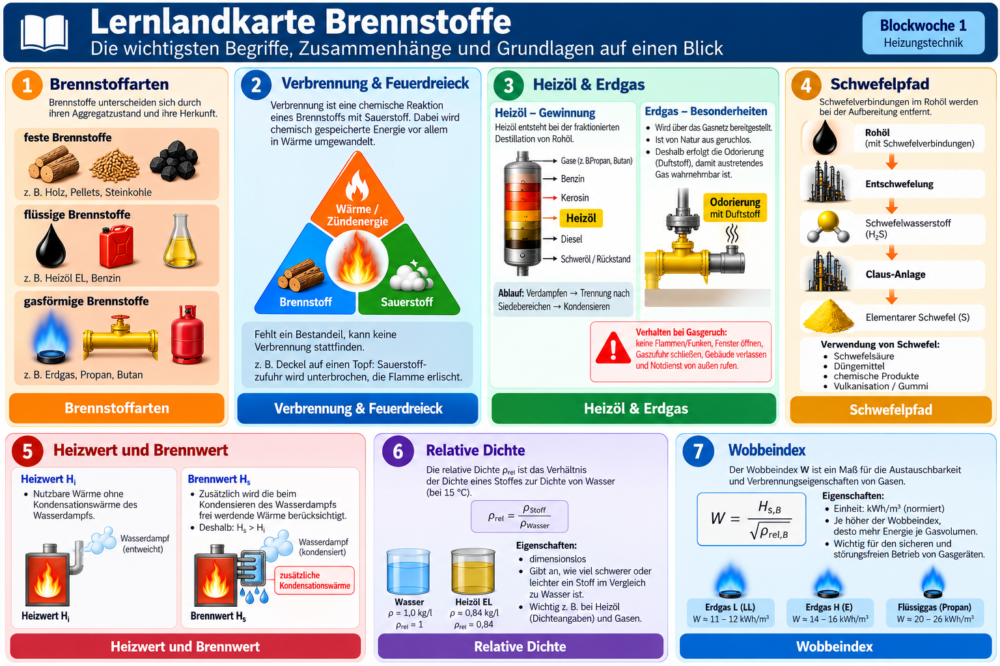

Wiederholung der 1. Blockwoche
Klicke auf einen Begriff im Bild. Erst danach erscheinen Erklärung und passende Übung.

leichterPropand ≈ 1,5
schwererButand ≈ 2,0
schwerer
1 · Welche Brennstoffarten gibt es?
Scheitholz, Pellets, Steinkohle
Meist Lagerraum oder Lagerbehälter nötig.Heizöl EL, Benzin
In geeigneten Behältern lagerbar; Benzin ist kein üblicher Heizungsbrennstoff.Erdgas, Propan
Gasnetz oder Flüssiggastank/Flaschen.Merke: Aggregatzustand, Herkunft, Lagerung, Verfügbarkeit, Energieinhalt und Umweltwirkung helfen beim Vergleich.
2 · Was braucht eine Verbrennung?
Ein brennbarer Stoff ist vorhanden.
Die Verbrennung braucht ein Oxidationsmittel – meist Sauerstoff aus der Luft.
Die erforderliche Temperatur muss erreicht werden.
Feuerdreieck: Fehlt eine der drei Voraussetzungen, kann die Verbrennung nicht aufrechterhalten werden. Verbrennung ist eine chemische Reaktion; dabei wird chemisch gespeicherte Energie freigesetzt.
3 · Heizöl, Erdgas und Schwefel
Wie entsteht Heizöl?
Dieses Trennverfahren heißt fraktionierte Destillation. Die Stoffe werden nach ihren unterschiedlichen Siedebereichen getrennt.
Warum riecht Erdgas?
Erdgas ist von Natur aus weitgehend geruchlos. Zur Warnung wird ein Geruchsstoff zugesetzt: Odorierung.
Bei Gasgeruch: Keine Flammen, Funken oder elektrischen Schalter betätigen; soweit gefahrlos möglich Fenster öffnen, Gas absperren, Gebäude verlassen und von außen Hilfe rufen.
Schwefelpfad
Elementarer Schwefel wird z. B. für Schwefelsäure, Düngemittel und chemische Produkte verwendet.
4 · Die Fachbegriffe, die du sicher beherrschen musst
Heizwert Hi
Freigesetzte Wärme bei der Verbrennung, ohne die Kondensationswärme des entstehenden Wasserdampfs.
Brennwert Hs
Zusätzlich wird die frei werdende Kondensationswärme des Wasserdampfs berücksichtigt.
Relative Dichte d
Vergleicht die Dichte eines Stoffes mit der Dichte eines Bezugsstoffes bei festgelegten Bedingungen.
Für Brenngase ist Luft der Bezugsstoff (bei gleichen Temperatur- und Druckbedingungen). Ohne Einheit. Beispiele: Erdgas (methanreich) d ≈ 0,6; Propan d ≈ 1,5; Butan d ≈ 2,0.
Gas mit d < 1 ist unter denselben Bedingungen leichter als Luft.
Wobbeindex W
Der Wobbeindex hilft zu beurteilen, ob Brenngase hinsichtlich der Wärmebelastung bei gleichem Düsendruck austauschbar sind.
Hs,V = volumetrischer Brennwert, d = relative Gasdichte zu Luft (gleiche Bezugsbedingungen). Einheit z. B. kWh/m³. Analog: Wi = Hi,V / √d.
Wichtig: Ähnliche Wobbeindizes allein garantieren nicht die vollständige Austauschbarkeit; weitere Gas- und Brennereigenschaften spielen eine Rolle.
Weitere Begriffe: Aggregatzustand · Dichte ρ (z. B. kg/m³) · Heizwert/Brennwert · Kondensation · Kalorimeter · Odorierung · fraktionierte Destillation · Entschwefelung · Verbrennung · Zündenergie · Energieinhalt Q · Betriebszustand. Merke: Werte aus dem Tabellenbuch nur mit passender Einheit und passendem Bezugszustand verwenden.
5 · Übungen und Selbstkontrolle
Bearbeite die Aufgaben zuerst selbst. Für die Rechnung gilt stets: Gegeben → Gesucht → Formel → Einsetzen → Ergebnis.
Aufgabe 1 · Brennstoff-Check
Aufgabe 2 · Feuerdreieck
Aufgabe 3 · Heizwert oder Brennwert?
Aufgabe 4 · Relative Dichte berechnen
Ein Übungs-Brenngas hat eine Dichte von ρGas = 1,80 kg/m³. Die Dichte der Luft beträgt bei den gleichen Bezugsbedingungen ρLuft = 1,20 kg/m³. Berechne die relative Gasdichte bezogen auf Luft.
ρGas = 1,80 kg/m³
ρLuft = 1,20 kg/m³
d = ?
Gesucht: d
Formel: d = ρGas / ρLuft
Einsetzen: d = 1,80 / 1,20
Ergebnis: d = 1,50 (einheitenlos). Das Brenngas ist dichter als Luft.
Aufgabe 5 · Wobbeindex verstehen und berechnen
Für ein Übungsbrenngas gilt Hs,V = 10,8 kWh/m³ und d = 0,64. Berechne den oberen Wobbeindex Ws.
Hs,V = 10,8 kWh/m³
d = 0,64
Ws = ?
Gesucht: Ws
Formel: Ws = Hs,V / √d
Einsetzen: Ws = 10,8 / √0,64 = 10,8 / 0,8
Ergebnis: 13,5 kWh/m³ (bei einheitlichem Bezugszustand).
Aufgabe 6 · Rechenlabor Erdgas (aus der Lernlandkarte)
Eine Anlage benötigt Q = 135 kWh pro Tag; Hs,B = 10,8 kWh/m³. Wie viel Erdgas wird benötigt? Berechne ohne Wirkungsgradverluste.
Q = 135 kWh
Hs,B = 10,8 kWh/m³
V = ?
Gesucht: V
Formel: Q = V · Hs,B
Umstellen: V = Q / Hs,B
Einsetzen: V = 135 kWh / 10,8 kWh/m³
Ergebnis: V = 12,5 m³ pro Tag.
Aufgabe 7 · Transfer: Kundenberatung
Ein Mehrfamilienhaus hat wenig Lagerraum. Welche Brennstoffart könnte geeignet sein? Nenne mindestens zwei Kriterien und begründe deine Empfehlung.
6 · Lernziel-Check
Kannst du diese Fragen ohne Nachschlagen beantworten?